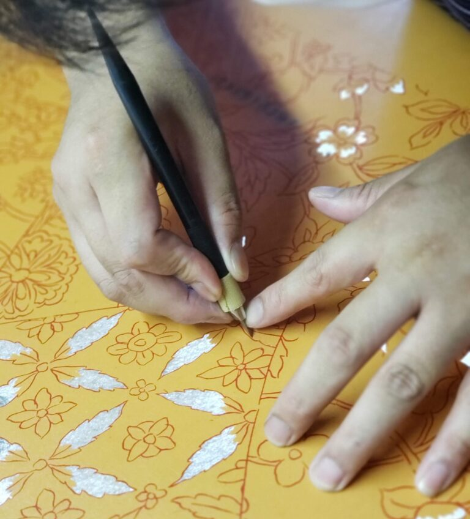
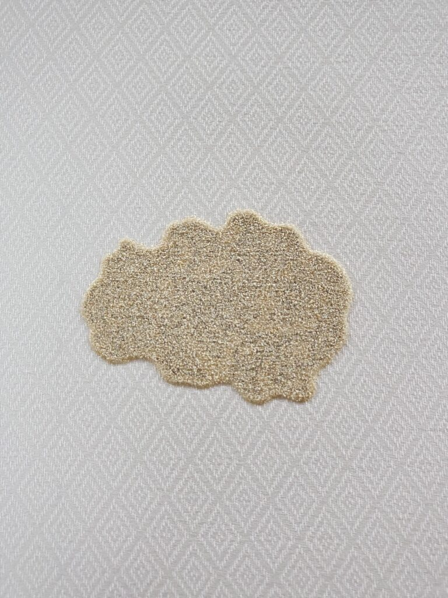
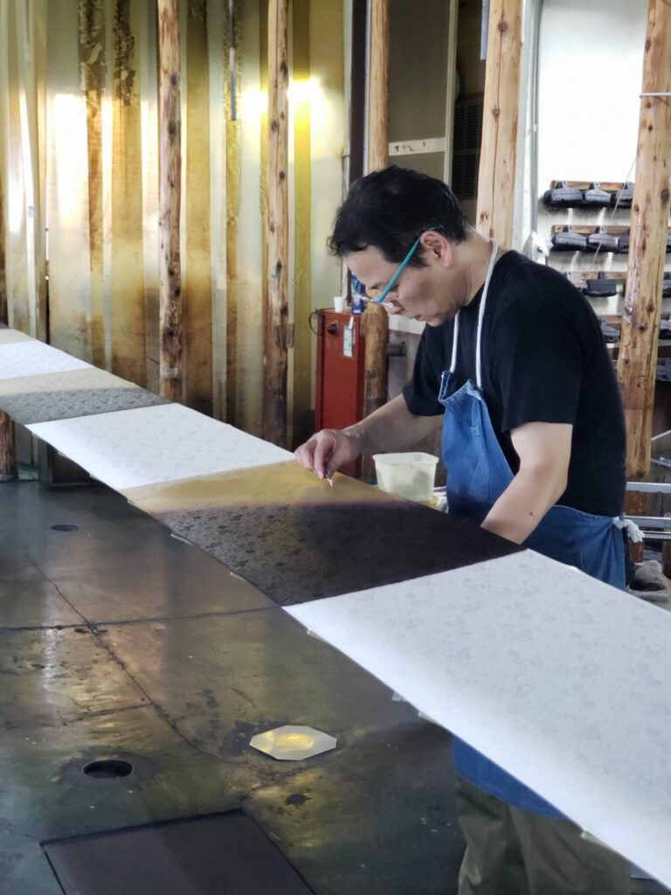
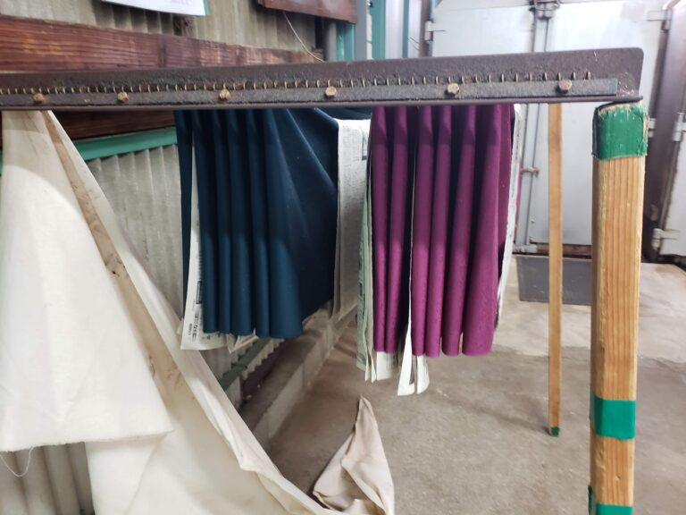
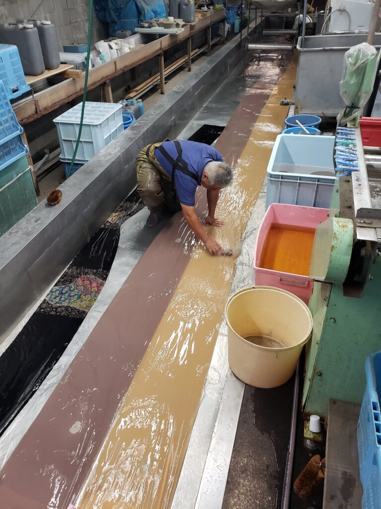
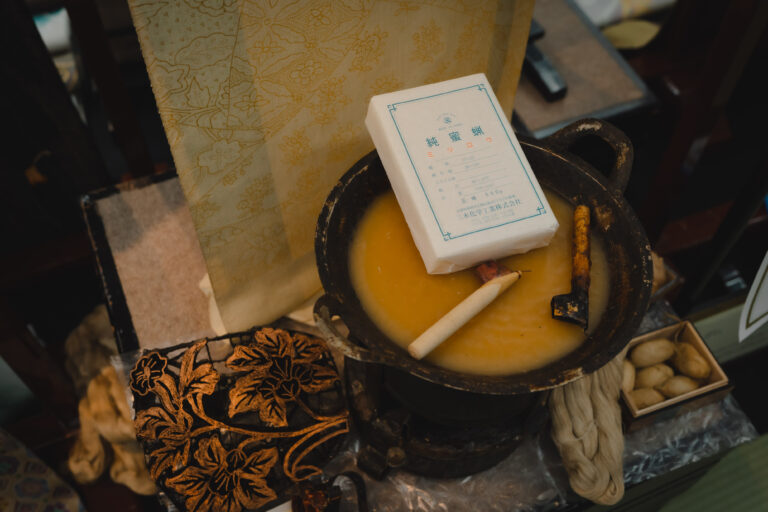
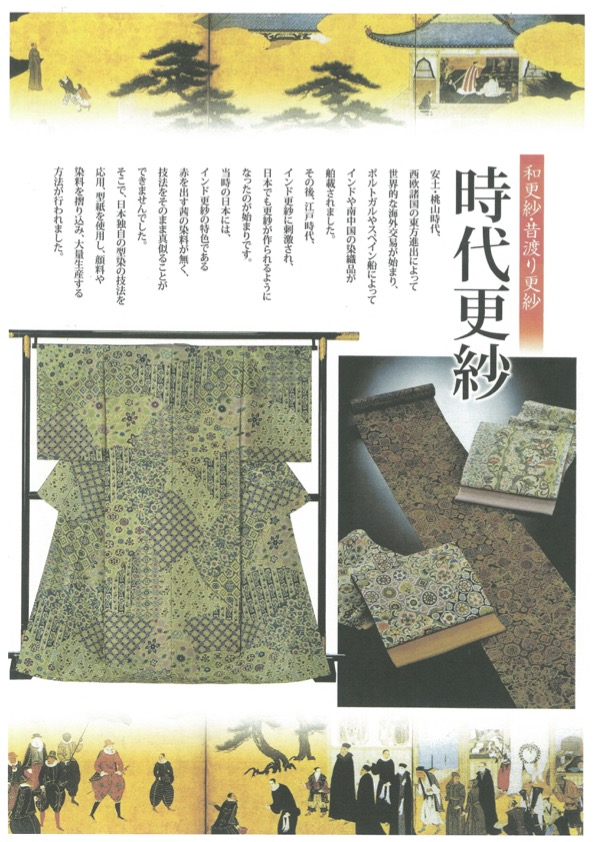
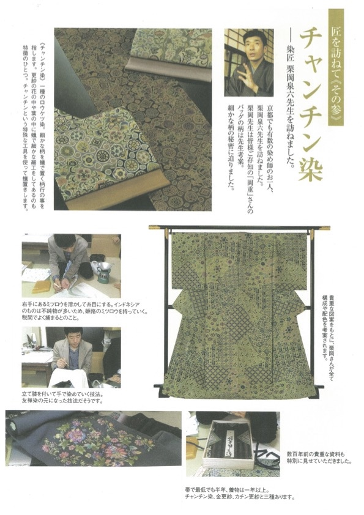
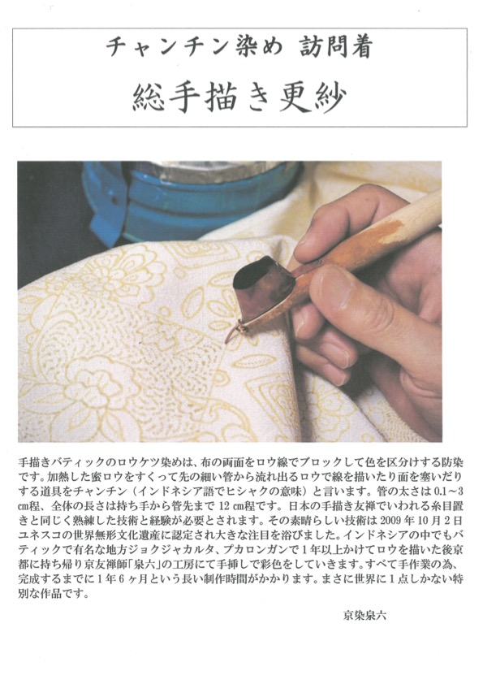
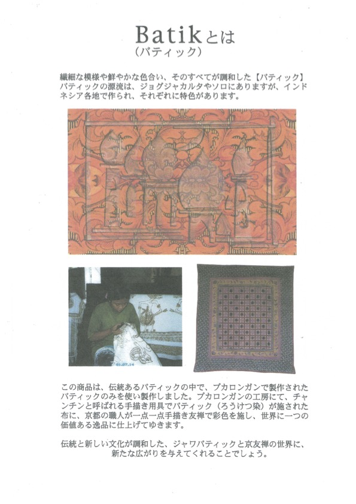

職人技の結晶が生む「染めの総合美術」
京友禅とは
京友禅は、江戸時代の元禄年間、当時京都で人気の高かった扇絵師・宮崎友禅斎によって創始されたといわれています。江戸幕府から出された奢侈（しゃし）禁止令により豪華な刺繍や絞りの着物が禁止された際、それに代わる優美で華やかな染め着物として人々の間で広く親しまれるようになりました。
● 雅やかな意匠と多色使い
花鳥風月や有職文様など、公家風の伝統的で雅やかな図案が特徴です。加賀友禅とは異なり、決まった基調色を持たず、職人の豊かな色彩感覚によって多種多様な色が鮮やかに使い分けられます。
● 豪華な仕上げ（金加工・刺繍）
緻密な染めに加え、仕上げに金銀の箔や刺繍を施すことで、より一層華やかな美しさを演出します。これは、古くから刺繍技術が栄えていた京都ならではの技法です。
● 分業制が生む最高峰の品質
京友禅は、図案から仕上げまで約23もの工程に分かれており、その全てを別々の専門職人が担当する完全分業制で制作されます。各工程の技を極めた一流の職人たちの技術を結集することで、一人では決して到達できない「染めの総合美術」が完成します。
京友禅（手描き友禅）ができるまで
模様の配置や色彩のバランスを考え、図案を起こします。
色の安定と深みを出すため、最初の下染めを行います。
水で落ちる青花液を使い、生地に直接図案を描き写します。

下絵に沿って糊を置きます。これが堤防の役割を果たし、彩色の際の滲みを防ぎます。

地色を染める際、柄の部分に色が入らないよう糊で覆います。

大きな刷毛を使い、ムラが出ないよう均一に地色を染めます。

約100℃の蒸気で蒸し、地色を定着・発色させます。

余分な染料や糊を水で洗い落とします。
彩色を均一にするため、ふのりを引いて生地を整えます。
糸目糊で囲まれた部分に、筆や刷毛を使って色を挿します。職人の色彩感覚が問われる、京友禅の魂ともいえる工程です。
再び蒸して模様の色を定着させ、余分なものを水で流します。
染め上がった生地に金銀の箔や刺繍を施し、立体的な輝きを加えます。
最後に生地幅を整え、縫い上げて完成です。
染匠（せんしょう）は、これら全ての工程を統括する総合プロデューサーです。全ての工程を自ら経験し、職人の心を熟知する染匠・栗岡泉六が、最高の技術を指揮して至高の一枚を形にします。
悠久の歴史と異国の情緒が織りなす美
更紗（さらさ）とは
 悠久の時を経て完成する、至高の更紗作品
悠久の時を経て完成する、至高の更紗作品
「更紗」とは、広い意味では木綿の生地に多色を使って文様を染めた工芸技法のことを指します。日本では木綿だけでなく、絹の生地に染めを施すことも一般的です。その異国情緒あふれる緻密な紋様と鮮やかな色彩は、古くから日本の人々を魅了し続けてきました。
1. 更紗の起源 ―― 2000年の時を超えて
更紗の歴史は極めて古く、その起こりは2000年以上前の古代インドに遡るとされています。文明が栄えたインダス川流域で、原料となる綿の栽培が行われていたことが始まりです。当初は衣類や寺院の装飾に使われていた更紗は、シルクロードを通って諸外国へ輸出されるようになりました。大航海時代に入ると、ポルトガルの探検家バスコ・ダ・ガマがインド航路を発見したことで、インド更紗はヨーロッパ諸国へも広まり、爆発的な人気を博しました。
2. 日本への伝来 ―― 染め文化の革命
日本に更紗が伝わったのは16世紀（安土桃山時代）とされています。それまでの日本には藍やウコンによる染色技術はありましたが、「染めのみで緻密な柄を描き、洗っても退色しない」という更紗の技術は、当時の日本人に大きな衝撃を与えました。これは、鉄やミョウバンといった「媒染剤（ばいせんざい）」を用いて色素と繊維を化学反応で結びつける、当時の日本にはなかった画期的な技法によるものでした。まさに、日本の「染め文化の革命」ともいえる出来事だったのです。
3. 日本における更紗 ―― 独自の発展を遂げた「和更紗」
江戸時代になると、依然として高級品であった輸入ものの「古渡り更紗（こわたりさらさ）」に憧れ、それを模した日本製の「和更紗」が各地で作られるようになりました。
● 各地の和更紗: 鍋島更紗、天草更紗、堺更紗、江戸更紗などが有名です。
● 京更紗（堀川更紗）: 京都では、図案起こしから絵付けまでをすべて手描きで行う「手描き更紗」が栄えました。良質な水に恵まれた堀川沿いで発展したことから、別名「堀川更紗」とも呼ばれ、京友禅の重要な技法の一つとして現代に受け継がれています。
4. 世界の更紗 ―― 各国の個性が光る多様な美
インドで生まれた更紗は、世界各地でその土地独自の文化と融合し、多様な姿へと進化しました。
● シャム更紗（タイ）: 自国で図案を考案し、インドへ注文して染めさせたのが特徴です。
● ヨーロッパの更紗: イギリスの「チンツ」や、フランス更紗などが生まれました。
● ジャワ更紗（バティック）: インドネシアのジャワ島で独自の技法として確立されたもので、2009年にはユネスコ無形文化遺産にも認定されました。クチャンチンという専用の道具を使い、溶かしたロウで防染する「ろうけつ染め」という高度な技術を要します。
チャンチン染め 手描き更紗
当工房の主宰である栗岡泉六は、このジャワ更紗の技術に深く惚れ込み、京都の感性と融合させた「チャンチン染め 手描き更紗」を手掛けております。チャンチンを用い、一年以上の歳月をかけてロウで柄を描き込み、京都で彩色を施すこの作品は、完成までに約一年半を要します。熟練の職人技が結集した、世界に一点しかない特別な美をお届けいたします。

伝統的な防染道具「チャンチン」


